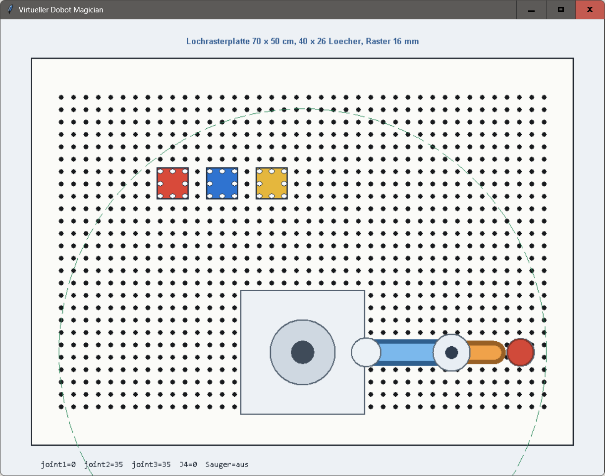

Auf der Webseite wird die Position der Lagerplätze und des Dobot Magician in einer Draufsicht gezeigt.
Die Bewegung des Roboterarms kann über die Webseite gesteuert werden.
Die Funktionen der vorhergehenden Webseite werden um ein editierbares Pythonprogramm erweitert,
das den Dobot Magician steuert.
Beispielprogramm:
home()
move_xy(182, 162)
suction(True)
move_xy(182, 162)
Speichere die beiden folgenden Dateien in einem Ordner und starte die Datei dobot_virtual_python_testen.py.
Das Programm startet eine Simulation des Dobot Magician und der Lagerplätze.
dobot_virtual_python.py und dobot_virtual_python_testen.py

Pythonprogramm zur Programmierung eines virtuellen Dobot Magician.